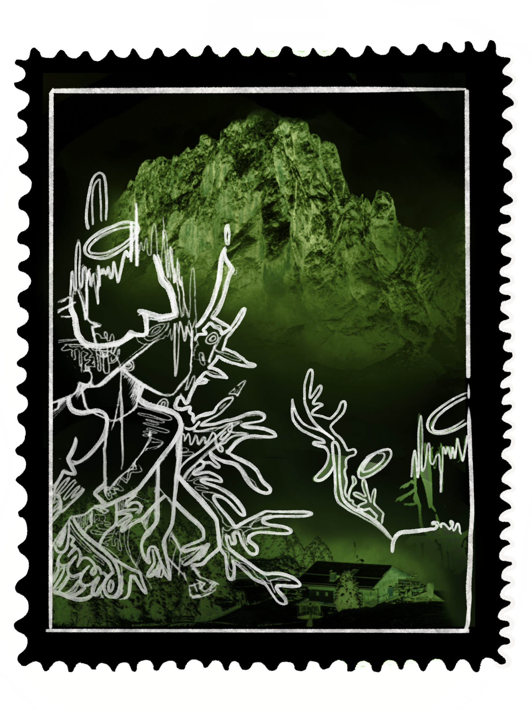
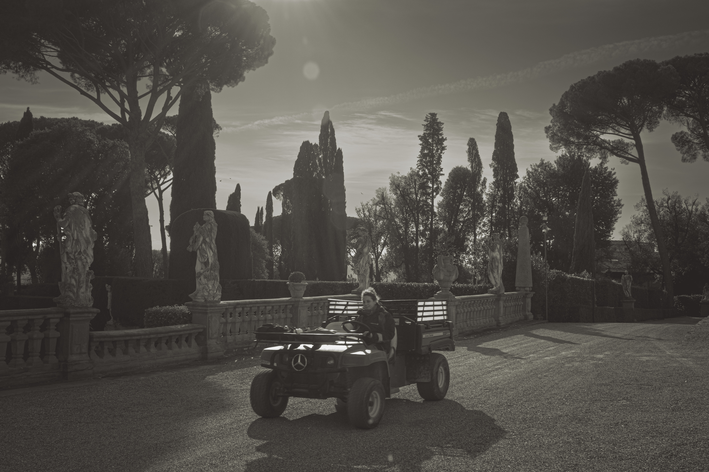
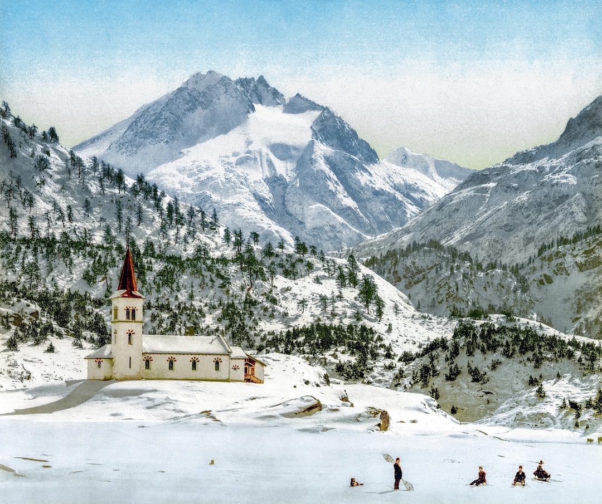
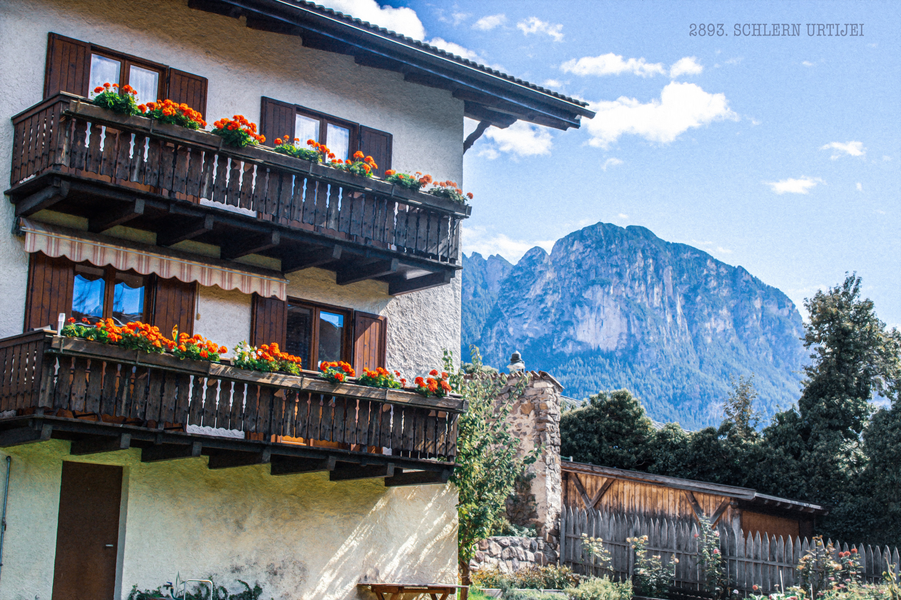
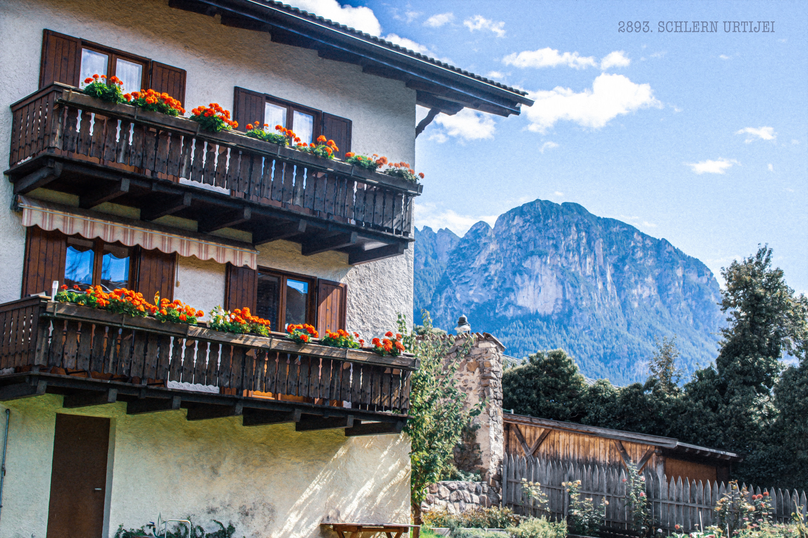

POSTCARDS OF
POWER

This series focuses on historical representations of natural architecture.
The sustained investigation has two distinct parts that form a narrative about how
landscape continues to serve as a tool for power.
SCROLL

I start with the 20th-century photography of Florentine gardens. The garden photography imitates Acton family photos from the archives of Villa La Pietra. The Acton Collection demonstrates an aesthetic focus on Italian landscape architecture that parallels the current gardens. When New York University inherited the villa, they restored it in the style of these early photographs, reminiscing on the guests and events hosted during the 1930s. These photographs center on early daguerrotypes and stereoscopic techniques that accentuate the delicate but powerful gardens.
FLORENTINE GARDENS

THE EARLY ALPS

‘Bavarian/Lower Austrian Alps,’ by Marc Walter/
Photovintage France in The Alps 1900. A Portrait in Color. https://www.cntraveler.com/gallery/the-alps-1900-a-portrait-in-color
Another part of this project draws from 20th-century photography of the Italian Alps. Peaceful and poetic, historical images of the Dolomites show wealthy vacationers searching for tranquility alongside daring alpinists searching for romantic discoveries.
Today, the Alps are rapidly becoming more accessible, and the tourist impact has been astronomical on local economies and conservation efforts. But Dolomite towns still curate national parks to give visitors and hikers the same pastoralism and romanticism sought in the early 20th century. My Alpine pictures reflect the angles, paths, and refuges that sprawl across the Southern Alps, giving an aura of wilderness and simplicity. I also pay attention to the unique color palette and styles developed by hotel networks to market their early polychrome prints. The postcard format allows for a sense of intimacy and personal connection as if the viewer has been invited to experience the landscape.
THE ALPS TODAY
‘Maloja,’ by Marc Walter/Photovintage France in The Alps 1900. A Portrait in Color. https://www.cntraveler.com/gallery/the-alps-1900-a-portrait-in-color

 

Throughout the investigation, I draw parallels between aesthetic structures across time by imitating the format, color palette, and styles adopted by 20th-century landscape photographers. In addition to revealing the significance of these places, drawing on historical photography allows me to show how the aesthetics of landscape architecture have changed.